Yangiliklar
E’lonlar
Tahsil qabuli, taqdimotlar, uchrashuvlar va boshqa e’lonlar. Jami 31 ta.
Mumtoz alifbo tahsilining 5-mavsumi boşlanmoqda.
Mumtoz alifbo tahsilining 5-mavsumi boşlanmoqda. Tahsil doirasida 4 mavsum darslar böldi. Bir neça yuz kişi bu kursda öqişsga harakat qildi. Xudoga şukurlar bölsinki…

Xabaringiz bor: Akrom Malik yaqinda "Mumtoz oila" kitobini yozib tugatdi.
Xabaringiz bor: Akrom Malik yaqinda "Mumtoz oila" kitobini yozib tugatdi. Ayni paytda kitob nashrdan chiqish arafasida. Bundan tashqari to'liq ovozlashtirilib…
Arizalar 30-sentabr kunigacha qabul qilinadi.
Arizalar 30-sentabr kunigacha qabul qilinadi.
Ko‘plab kitobxonlar ko‘nglidan joy olgan muallif Akrom Malik bilan bo‘lib…
📢 Ko‘plab kitobxonlar ko‘nglidan joy olgan muallif Akrom Malik bilan bo‘lib o‘tadigan samimiy uchrashuvga barcha kitobsevarlarni taklif qilamiz 🎵 💬 Tadbir davomida erkin…
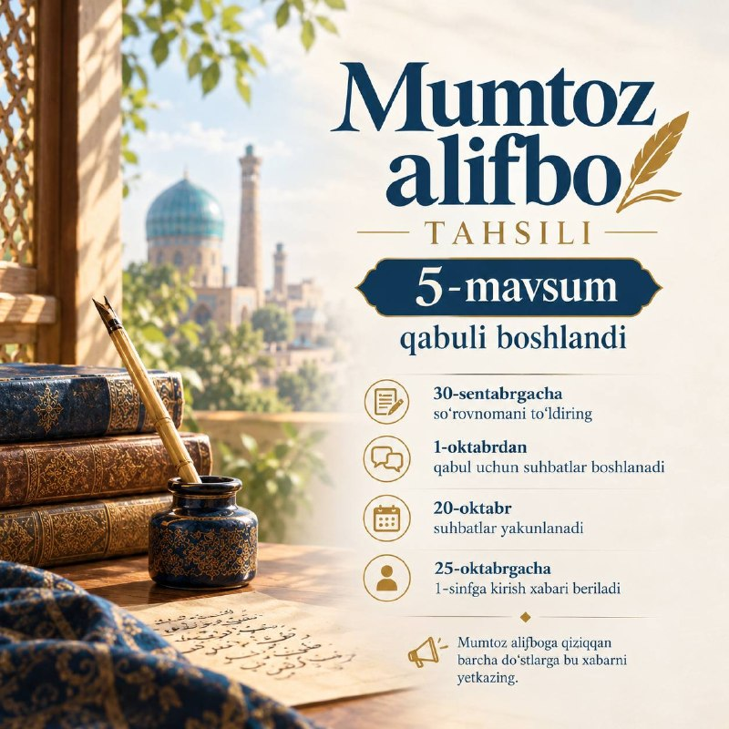
Mumtoz alifbo tahsili talabgorlari uchun 5-mavsum qabuli boshlandi:
👉 https://forms.gle/9NzFFVtCR993Ktk87 Bu haqda eslatma berilgan edi. Soʻrovnomani 30-sentabrgacha toʻldiring. Kechikmang. 1-oktabrdan ariza toʻldirganlar bilan qabul…

Kitobxonlar uchun maxsus uchrashuv! 🔔
🎉 O‘z asarlari bilan ko‘plab kitobsevarlarimiz qalbidan joy olgan yozuvchi Akrom Malik ishtirokida 1-oktabr kuni Afif Books’da “Erkin suhbat kuni” tashkil etiladi. 📅…
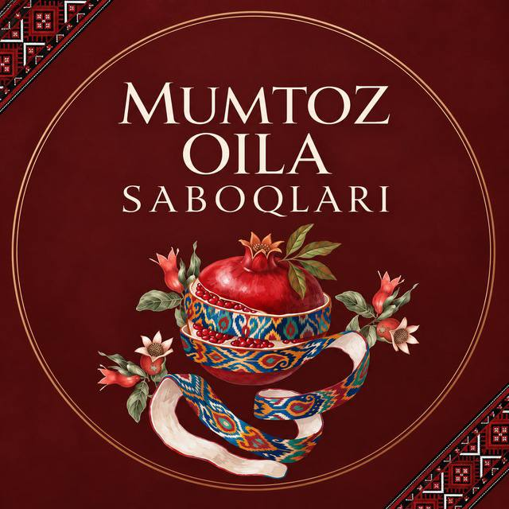
Akrom Malikning “Mumtoz oila” kitobi nashrga tayyorlanmoqda.
Akrom Malikning “Mumtoz oila” kitobi nashrga tayyorlanmoqda. Nasib boʻlsa, kitob nashr etilgach, fayzli bir taqdimot qilish rejasi bor. Siz agar kitobni oldindan…
Аssalomu alaykum!
Adabiyotga oshno aziz mehmonimiz! Sizni 2026 yil 26-sentyabr kuni soat 10:00 da Piskent tuman Axborot-kutubxona markazi va Muzayyana Alaviya nomidagi adabiyot to’garagi…
Qariyb 14 asr ajdodlarimiz foydalanib kelgan alifbo haqida bilsangiz kerak.
Qariyb 14 asr ajdodlarimiz foydalanib kelgan alifbo haqida bilsangiz kerak. Xabar berganimizdek, ushbu mumtoz alifbomizning ahamiyati haqida matnshunos olim, filologiya…
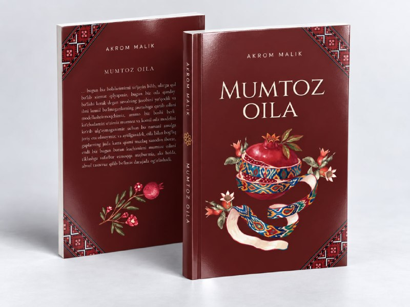
"Mumtoz oila" kitobi muqovasi tayyor, alhamdulillah.
"Mumtoz oila" kitobi muqovasi tayyor, alhamdulillah. Muqovalar tanlovida Munisa Ahmadjonova ismli kuzatuvchimiz g'olib bo'ldilar. Endi aziz do'stlarimizdan bizga duo…
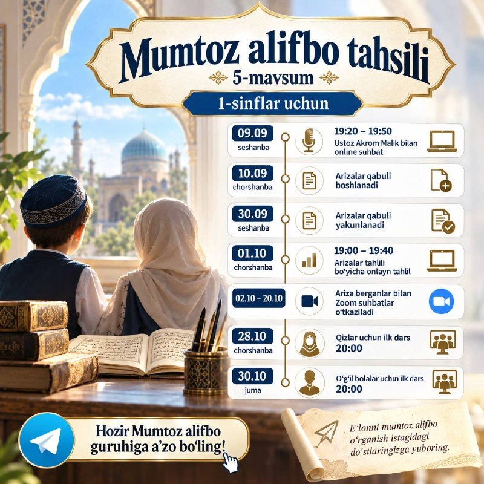
Mumtoz alifbo tahsili 5-mavsum 1-sinflar uchun 10-sentabrdan boshlab arizalar…
Mumtoz alifbo tahsili 5-mavsum 1-sinflar uchun 10-sentabrdan boshlab arizalar qabuli boshlanadi. 9-sentabr kuni Mumtoz alifbo guruhida soat 19:20da ustoz Akrom Malik…
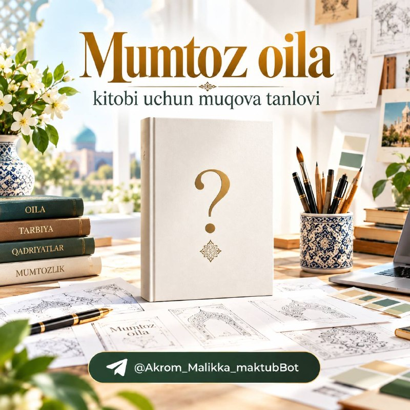
“Mumtoz oila” kitobi bitdi, Xudoga shukur.
“Mumtoz oila” kitobi bitdi, Xudoga shukur. Oxirgi boblari bugun-erta kanalda chiqadi, inshaAlloh. Kitob muqovasi uchun tanlov e’lon qilinadi. Orangizda kitob manzur…
23-avgust kuni bo'lib o'tgan "Gunohlar va tavbalar" suhbatining 2-qismini Sizga…
23-avgust kuni bo'lib o'tgan "Gunohlar va tavbalar" suhbatining 2-qismini Sizga taqdim etmoqdamiz. Birinchi qismi bu yerda 👉 https://t.me/AkromMalikUz/1138 Kirish…
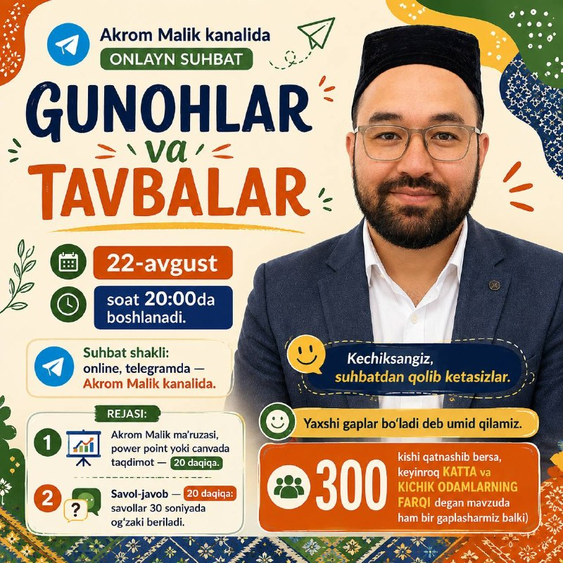
Akrom Malik bilan ushbu kanalda biror mavzuda, masalan, “Gunohlar va tavbalar”…
Akrom Malik bilan ushbu kanalda biror mavzuda, masalan, “Gunohlar va tavbalar” degan mavzuda suhbat boʻlsa, ne deysizlar deb soʻrasak, ha, qatnashamiz, shu suhbat kerak…
Xabaringiz bor: biz 2025-yil 1-noyabr oyidan boshlab Turkiy alifbo tahsilini…
Xabaringiz bor: biz 2025-yil 1-noyabr oyidan boshlab Turkiy alifbo tahsilini boshlaganmiz. Noyabr, dekabr va yanvar oylarida bir guruh o'quvchilar "Ustodi avval" o'qib…

Xabarlaringiz bor, Turkiy alifbo tahsili 4-mavsumini boshlayapmiz.
Xabarlaringiz bor, Turkiy alifbo tahsili 4-mavsumini boshlayapmiz. Jami 132 ta ariza tushdi. Va’damizga koʻra, har bir arizachiga telegram orqali xat yuborildi…
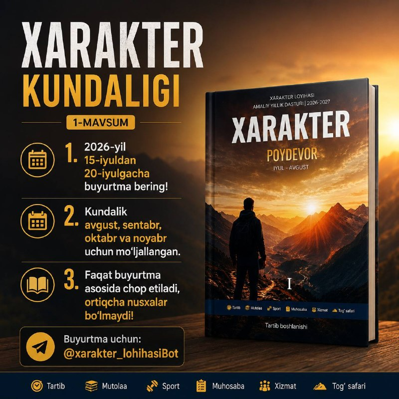
Kuzatuvchilarimizning xabari bor, Xarakter loyihasini boshlaganmiz. Suhbatdan…
Kuzatuvchilarimizning xabari bor, Xarakter loyihasini boshlaganmiz. Suhbatdan oʻtganlar bilan amaliyot ketyapti, albatta, natijalarga koʻra yana saralanish boʻladi…
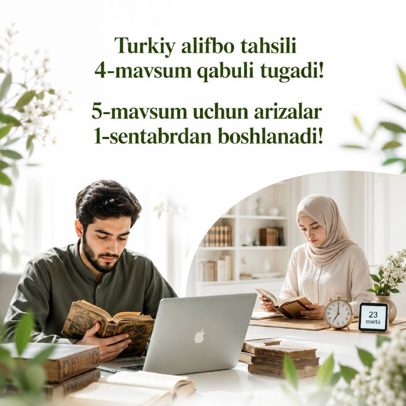
Turkiy alifbo tahsili 4-mavsum uchun arizalar qabuli yopildi. 5-mavsum qabuli…
Turkiy alifbo tahsili 4-mavsum uchun arizalar qabuli yopildi. 5-mavsum qabuli 1-sentabrdan boshlanadi. Qabul muddati tugagach, bir necha kishi murojaat qildi, ammo qoida…
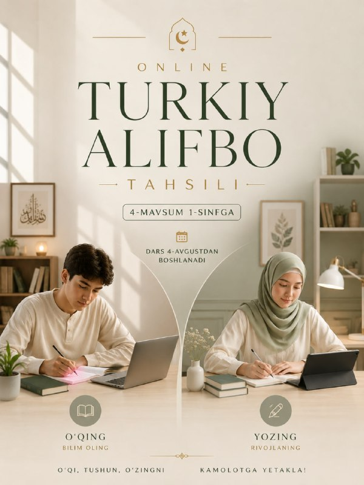
Online Turkiy alifbo tahsili 4-mavsum 1-sinfga oʻquvchi qabul qilish tartibi:
1. Guruhga qoʻshilish: 👉 Kalit 2. Qabul uchun arizalar topshirish: 1-iyundan 1-iyulgacha davom etadi. 3. Qabul uchun yakka tartibdagi suhbat: 1-iyuldan 20-iyulgacha…
"Xarakter" loyihasi
Inson, ayniqsa, erkak o‘zini tarbiyalab, shakllantirib olishi muhim hodisadir. Maktablarda 12 yil xotin o‘qituvchilar ta’limini olgan o‘g‘il bolalarda erkak xarakteri…
Qizlarning otalari kuyovingiz bo‘laman degan yigitlarni biror aniq hunarga ega…
Qizlarning otalari kuyovingiz bo‘laman degan yigitlarni biror aniq hunarga ega bo‘lishlarini talab qilishlari yaxshi. Yigit biror yaxshi qizga uylanaman deb, muayyan…
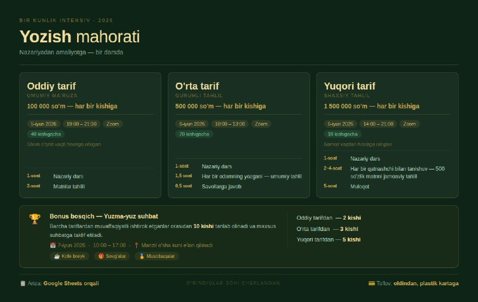
Yozish mahoratidan bir martalik dars
Akrom Malikning mahorat darsiga taklif qilamiz! BIRINCHI MAVSUM UCHUN QABUL OCHIQ DEB E'LON QILAMIZ Ushbu dars uch xil tarifda tashkillashtiriladi. Oddiy tarif 40…
28-aprel, seshanba, 2026-yil.
28-aprel, seshanba, 2026-yil. Soat 19.30. Turkiy alifbo tahsili 1-, 2-mavsumning 1-va 2-sinflar o'z bosqichlarini yakunlashadi hamda faol o'quvchilar olgan ilmlari…
Online Turkiy alifbo tahsili 3-mavsum 1-sinfga oʻquvchi qabul qilish tartibi:
1. Guruhga qoʻshilish: 13-martdan 1-aprelgacha davom etadi. 2. Qabul uchun arizalar topshirish: 2-apreldan 12-aprelgacha davom etadi. 3. Qabul uchun yakka tartibdagi…
AQSHda yashovchi vatandoshlar diqqatiga!
AQSHda yashovchi vatandoshlar diqqatiga! Farzandlaringiz oʻzbek tilini unutib qoʻyishmayaptimi?.. Bizda ingliz zabonlar uchun moʻljallangan oʻzbek tili darsligi bor…
Ikki narsa borki, olamda, ey doʻst,
Ikki narsa borki, olamda, ey doʻst, Aql-u hushing olib sarmast aylagay. Nafsingga har ishin koʻrsatib durust, Shaytonga hamtovoq, hamdast aylagay. Birining nomidir…
Assalomu alaykum va rohmatullohi va barokatuh! Hurmatli doʻstlar! Sizni 4-fevral…
Assalomu alaykum va rohmatullohi va barokatuh! Hurmatli doʻstlar! Sizni 4-fevral kuni soat 9:30 da “Hayrat ul-abror” dostoniga Akrom Malik yozgan sharh kitobi…
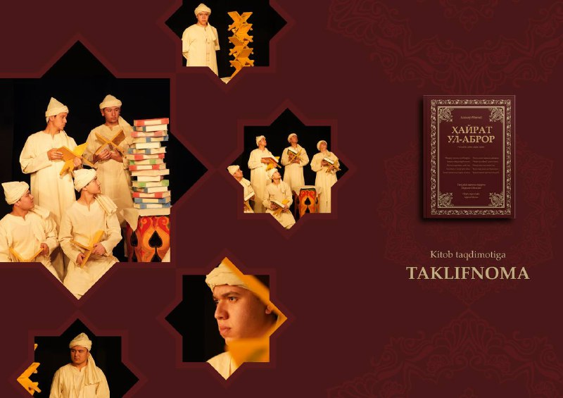
Hurmatli doʻstlar!
Hurmatli doʻstlar! Sizni 4-fevral kuni soat 9:30 da “Hayrat ul-abror” dostoniga Akrom Malik yozgan sharh kitobi taqdimotiga taklif qilamiz. Taqdimotda yosh ijodkorlar…
Diqqat!
“Hayrat ul-abror” dostoni sharhi taqdimoti 2025-yil, 4-fevral, seshanba kuni soat 09:30da boshlanadi, Xudo xohlasa. Taqdimot boʻlib oʻtadigan manzilni alohida…
Navoiyshunos Akrom Malik hazrati Alisher Navoiyning "Hayrat ul-abror"dostoniga…
Navoiyshunos Akrom Malik hazrati Alisher Navoiyning "Hayrat ul-abror"dostoniga birinchi to'liq sharhni yozdi. Mazkur sharh 2024-yilning oxirida "Tavfiqnashr"…
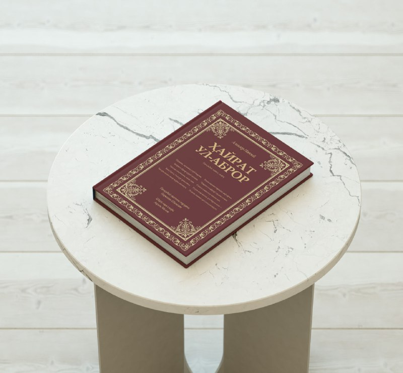
"Ҳайрат ул-аброр" китобининг тақдимоти учун ҳаракат бошладик.
"Ҳайрат ул-аброр" китобининг тақдимоти учун ҳаракат бошладик. Тақдимот 2025 йилнинг 15 январ - 1 феврал саналари ичида ўтказилиши режалаштирилмоқда. Тақдимотда…
Hech narsa topilmadi.